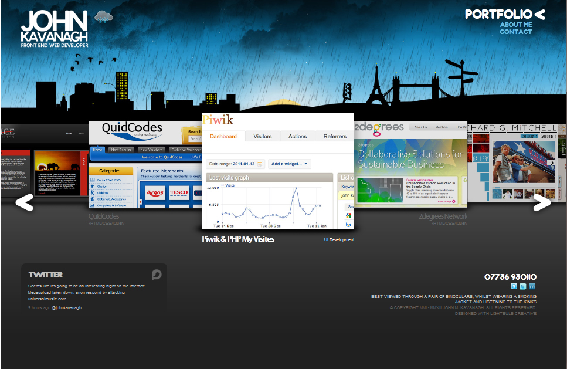

Competitive Analysis: Portfolios
Samson Toor A****780
Portfolio(all accessed 1/18/12) |
Brand |
Functionality |
Interactivity |
Navigation |
|
|---|---|---|---|---|---|
1. |
 |
manageable
simple basic incomplex tame |
well laid out and overall functional design, despite being simple, a well rounded template. Elements are not distracting and information is easily digestable | Different areas of the page come to life when the cursor is passed over. The bottom 2 boxes become colored and shaded, top box displays arrows to change slide, and top links reveal more pages | When moving around to different pages via the top navigation bar, a red slider becomes fixed to the current page which is how you know which level you are on. It does this well so there is no confusion throughout |
| Name: Vladimir Strajnic Layout type: Mainly 3 box w/ links on bottom |
|||||
2. |
 | professional qualified experienced sharp efficient | This is a very professional looking design. The site portfolio is laid out in a coverflow type interface. This flows well and give off the presentation of being cutting edge and sleek without being confusing | Clicking on arrows in the site coverflow lets you freely move through the portfolio without a problem. The top background is dynamic and changes with the current weather in Manchester. The temperature is revealed by hovering over a weather icon. A subtle, unobtrusive touch | The page navigation scheme is laid out in the top right corner and the current page is known by a displayed "<" symbol next to the bolded text which highlights the current page. |
| Name: John Kavanagh Layout type: 3D screenshots Url: http://johnkavanagh.co.uk/ |
|||||
3. |
 |
prompt skillful expert minimal clean | Basic gallery layout that effectively displays media in an unobtrusive, proficient manner while being organized by column titles leading to overall organization and cohesiveness | Not much going on in terms of interactivity. The only objects that respond to cursor roll over are the column titles that become a solid color. Very plain and basic effect that adds some minimal stylistic properties to the overall page. You can navigate through the media with the arrows on each side aswell | The site really only has two pages, "HOME" and "MORE ABOUT ME". With that said, the top right corner displays text to let you know which of those two pages you are currently on. An example of a very simple site where everything is a few clicks away. |
| Name: Sanjay Sree Lakshmi Layout type: Headline and gallery Url: http://www.sanjayvb.com/#1 |
|||||
4. |
|
smooth tasteful stimulating equisite stylish colorful vivid striking |
This is a webpage with the portfolio laid out in the right half of the page, displayed through an interactive control element that produces thumbnails on the bottom portion of the page for streamlined access. A very clean and stylish approach to viewing media. | The site is highly interactive, with links on the bottom making an assortment of transitions. What really shines is the ability to display the portfolio media in fullscreen mode and as a slideshow or still image with a mere click of a button. Very good use of flash technology, giving an overall professional and vivd experience to the user | As of current testing, the links to other parts of the site are broken with the exception of the "blog" link that directs to a completely new page. This is a huge usability and navigational error that needs to be corrected before anything else can be said. The boxes for the links highlight red so it can be inferred that they do so for navigation/salient purposes |
| Name: Syahrin Abdul Aziz Layout type: Featured photo with fixed left column and navigation links on bottom Url: http://syahrinaziz.com/loader/ |
|||||
5. |
 |
clean elegant respectable graceful aesthetic |
A very clean and elegant page with vibrant images placed into boxes under a larger main slide show box element. Links are located on the top of the page as well as the bottom. The pictures are also linked to pages. | The page is lacking in interactivity. There seems to be no interactive elements with mouse roll over. All though this can make a site seem boring, it flows well with their clean, aesthetic layout and everything is as expected of such a site | Navigation is done by clicking the links on the top right navigation buttons. The buttons turns dark when you move to a new page thus letting you know that you are currently on that page. A general navigation practice that gets the job done. The site is simple in these respects and information is easy to find for the user |
| Name: Stan and Jane Photography Layout type: Five boxes Url: http://www.stanseatonphotography.co.uk/index.php |
|||||
6.
|
disorder commotion dizzy surprising unique creative artistic |
A very entertaining site with a handful of unique transitional elements that ultimately may either distract, bother, or be loved by select types of users. Since everything is spread out, it may take a few minutes to figure out where the pages are and what links lead to other parts of the site. A great way to draw attention to your work by people who might not have done so | As stated before, the site is highly interactive and goes above and beyond traditonal sites in that sense. It is truly a unique experience and one can see the skillfullness and experience the site owner must have to creat such a creative, artistic approach to a portfolio. The background is dynamic and changes per reload to a different full screen animated image. It is a nice touch, overcrowed by the already distracting layout scheme. | Navigation is somewhat of a guessing game at first, but after playing around for a while you can start to notice that 3 boxes move with you on your journey down the page to explore the portfolio media. These boxes are "About Me", "Work", and "Get In Touch". They become solid red on their respective pages, indicatiing to the user that they are on the current page. | |
| Name: Toomas Tartes Layout type: a unique twist on the headline and gallery template url: http://www.toomastartes.com/work |
|||||
7. |
polished unique creative ingenious harmonious congruous | Another creative approach to portfolio management. The site has many different interactive features going on at once. The further you pluge down the page, the more elements reveal themselves. The layout is comprimised by this structure as you have to explore deep in the page to see the resources, but your curiosity will get the best of you on this unique site | The site is highly interactive, with links that take you deep inside the page to different elements that rely on user interaction. There are too many nuances to list so you have to see it for your self if you want to truly appreciate the work put into coding this site | Navigation is handled by the transparent links located on the left most side of the page. These links become dark colored when you are on a certain level and thus tell you which section you are viewing currently. | |
| Name: Soup Agency type: a unique twist on the headline and gallery template Url: http://www.soupagency.it/#portfolio |
|||||
8. |
(full screen)
|
entertaining distracting overwhelming astound puzzle | An interesting take on the headline and gallery template, this site incorporates various transitional elements and design to keep the user entertained. All the portfolio media is laid out in a vertical fashion for the user to explore and thus each media item is a page in itself | The site is repetitive in the sense that every media item does the same transition, consisting of a bar fading in on the top of each item, which you can infer can get boring or tedious to look at. This simple transition is used throughout the page | Since the page was designed to be viewed in a vertical fashion, pages are not present in the traditional organized navigational sense but each media item becomes its own page when clicked. This is an interesting approach, but can get quite laborous and make the user feel like they are entering a chore instead of finding information about the portfolio holder. |
| Name: Black Meridian Layout type: Extended version of Headline and gallery template Url: http://black-meridian.com/ |
|||||
9. |
slick masterful clever polished | A one of a kind portfolio that grabs your attention and never lets go. A truly unique experience that no one else can evoke. The page is browsed vertically by cursor or keyboard and each subsequent click takes you to a new, creatively laid out page for your viewing pleasure | The page is all about interactivity. The only way you can get around is by clicking obscure boxes from the beginning, so it isnt really straightforward. But your confusion is quickly swept away by a sea of creativity that only an artist like Yoshito can master in Japan. Scrolling over the boxes reveals other pictures and transitional elements. It is really a treat to explore! | As stated before, navigation is done by clicking boxes with the cursor or keyboard. The page is laid out in a vertical fashion, so browsing consists of moving down the page. You must click on the boxes to see the pages display vertically, otherwise you will abrubtly reach the end of the site and miss out on a great experience | |
| Name: yoshito Hasaka Layout type: Url: http://f7th.com/#/home |
|||||
10. |
|
direct simple unsophisticated sincere | This is as simple as as you can get for a portfolio. The site literally consists of one centered image and then a few links sprinkled off to the left of it in a fixed pane. Because of this exceeding simplicity, it is only fair to say that the site is highly functional. You can, afterall, only visit a couple pages of portfolio media and nothing else. | Due to the simplistic nature of the site that the designer is trying to convey, it is only fitting that there are minimal transitions and effects being displayed. The only real effect displayed is by pressing a button that appears once you explore any of the links. The effect is that it makes the portfolio media be displayed in a circular fashion where the main image once was. | Navigation is very simple on this portfolio. You just click on the links and the media within the links replace the main image, making it almost a seamless transition as if the page didnt change at all. The links turn black when viewing that page to indicate where you are located on the site. |
| Name: April Mountfort Layout type: Featured photo Url: http://www.aprilmountfort.com/ |
Rough Sketch of my Personal Portfolio DesignThinking something abstract, big pictures that arent focused and, in a sense, make you think. I enjoy photography on my off time so I can put something interesting together and implement some interesting scripts. I will definitely make it more professional so that it can tailor to the corporate world aswell. I enjoy simple, minimalist designs that make access to information easy to obtain and make you remember something peculiar about the site that stands out to you in a positive way. |
||||